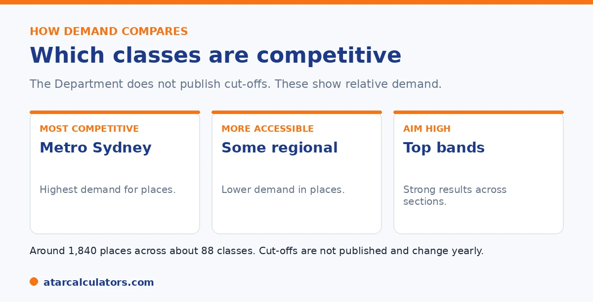

Here is the short version. The NSW Department of Education does not publish cut-off scores for any opportunity class, so there is no official number for any school. What is known is the relative demand. Classes in metropolitan Sydney are the most competitive, while some regional classes are more accessible. Around 1,840 places are offered across about 88 classes. Aim for strong results across all three sections rather than a fixed score.
Parents often search for the cut-off at a specific opportunity class. It is a reasonable thing to want. The problem is that no such number is published, and figures online are estimates.
What can be said is how demand compares, and how to aim high sensibly. To estimate where a practice result sits, use our OC score calculator.
Key takeaways
- The Department does not publish cut-offs for any class.
- Classes in metro Sydney are the most competitive.
- Some regional classes are more accessible.
- Around 1,840 places across about 88 classes.
- Cut-offs change every year with the cohort.
- Aim for strong results across all three sections.
Let us be honest about cut-offs
The Department does not release cut-off scores, raw marks, or a score total for any opportunity class. So there is no official number for any school, however often you see one quoted.

Any exact figure online is a third-party estimate, usually from past years. Cut-offs also move each year, because entry is a ranking against the children who sat the test that year.
Metro Sydney versus regional demand
The clearest pattern is location. Demand is far higher in metropolitan Sydney, where the most popular classes draw the strongest field. A top result is needed for these.
Some regional classes are more accessible, with lower demand, though this varies. There are around 88 classes in total, with most in metro Sydney and a smaller number in regional areas, plus an online option through Aurora College.
How many places, and how competitive
Around 1,840 places are offered each year, against roughly 12,000 to 14,000 applicants. That means only a minority get an offer, so competition is real, especially in Sydney.
The numbers are worth knowing, but they should not discourage you. A strong, balanced result gives a child a genuine chance, and missing out is not a verdict on their ability.
Want a rough idea of how a result compares?
Try the OC score calculator →How to gauge competitiveness without a number
Since there is no published cut-off, use what you do get. The performance bands on a result, and a child's percentile on good practice tests, tell you roughly how they compare with others. Aiming for the top band across all three sections is the safest route to a competitive class.
The point is to focus on performance, not on hitting a figure that does not officially exist. For how the scoring and ranking work, see our OC score guide.
Choosing your preferences
You can list up to four classes. Listing only the most competitive metro classes is risky. This is because a child who ranks just below the line at all of them can miss out entirely.
A balanced list pairs an ambitious choice with a more realistic one. It is also worth weighing the daily commute, since OCs sit inside specific host primary schools. For a preparation plan, see our OC preparation guide.
The way placement works rewards a thoughtful list rather than a hopeful one. Your child's single placement score is matched against the classes you preference. And a place is offered at the highest-preference class where the score is competitive. Because the most sought-after metro classes attract the strongest applicants, their effective cut-offs sit highest. So a list made up only of those leaves no safety net if your child lands just below the line. A more robust list mixes tiers. An aspirational class or two at the top, then one or more classes with historically lower demand. So a near-miss at the top still yields an offer lower down. Distance is a genuine factor here, not an afterthought. This is because an OC place means a daily commute to the host school for two years. A class that looks attractive on paper can be impractical once travel is counted. So only preference classes you would actually accept. There is no published cut-off for any class and demand shifts year to year. So treat past patterns as a guide, not a guarantee, and build the list around what suits your child and family rather than prestige alone.
Why OC cut-offs move year to year
OC cohorts are small, and demand is local. A popular OC school in one year can see its effective entry bar rise, then fall the next, as the mix of applicants changes. Small numbers make the swings larger.
So even if you could find last year's figure, it would be a shaky guide. The bar is not fixed, and a single year tells you little about the next.
Travel and which OC schools to consider
OC students travel to the OC school, which may not be their local one. So commute is a real factor for a nine or ten year old, and worth weighing when you list preferences.
A slightly less contested OC school with a manageable trip can be a better choice than a highly sought-after one far away. Practicality matters at this age.
OC is about fit, not just a score
Opportunity Classes are designed for high-potential students who benefit from extension and working alongside similar peers. The point is fit, not simply chasing a number.
So the useful question is whether an OC setting would suit your child, socially as well as academically. For some children it is a great fit; for others, a strong local class with extension works just as well.
If your child does not get a place
Most applicants do not receive an OC offer, so a miss is common and says nothing about your child's ability or future. Plenty of children thrive without an Opportunity Class.
So have a positive plan either way. A good local school, wide reading, and encouragement at home give a high-potential child everything they need to keep growing.
Demand shifts year to year
The popularity of a given Opportunity Class changes from year to year. A class that drew many strong applicants one year may be less contested the next, so last year's effective bar may not hold.
So even a real figure from a past year is a shaky guide. With small cohorts and shifting local demand, the entry bar simply is not stable enough to plan around.
Ask the school or the Department
For accurate, current information, go to the source. The OC school or the Department of Education can tell you about the process and what to expect, far better than a figure from an online forum.
So treat unofficial cut-off numbers with caution. They are guesses, often out of date. Official channels will not give you a magic number, but they will give you reliable information.
Places are limited everywhere
Opportunity Class places are few compared with the number of applicants, at every OC school. So a miss is common, and it says nothing about your child's ability or future.
This is worth remembering when you weigh where to apply. There is no OC school where entry is easy, and no figure that guarantees a place. Applying with realistic expectations, and a positive plan either way, keeps the process healthy for your child.
Local demand drives each class
Each Opportunity Class has its own local demand, and that is what sets its effective entry bar. A class in a high-demand suburb can be far more contested than one elsewhere, even in the same year.
So there is no single citywide bar, and no figure that applies across schools. The sensible approach is to consider known demand for the specific classes you are weighing, and to choose preferences with that local picture in mind.
Common questions
What are the OC cut-offs by school?
No official cut-offs are published for any opportunity class. Figures online are third-party estimates that change each year. Classes in metro Sydney are the most competitive, while some regional classes are more accessible.
Which opportunity classes are most competitive?
Classes in metropolitan Sydney draw the strongest field and are the most competitive. Demand is generally lower in some regional areas, though it varies. A top result is needed for the most popular metro classes.
What is a top OC cut-off?
There is no published figure to quote. The most competitive classes need a result near the top of the statewide ranking, with strong, even performance across all three sections. Treat any specific number online as an estimate.
How many OC places are there?
Around 1,840 places are offered each year across about 88 opportunity classes. Roughly 12,000 to 14,000 children apply, so only a minority get an offer.
How do I judge competitiveness without a cut-off?
Use the performance bands on a result and a child's percentile on good practice tests to see how they compare. Aiming for the top band across all three sections is the safest route to a competitive class.
See how a result compares
Enter practice section results for a rough competitiveness guide. Free, and no signup.
Open the OC score calculator →Related guides
This guide is general information for parents, not formal advice. The NSW Department of Education sets the rules, and details can change. It does not publish section weightings, a score total, or class cut-off scores. So always confirm current details on the official NSW opportunity classes pages. Reviewed by the ATARCalculators Editorial Team.